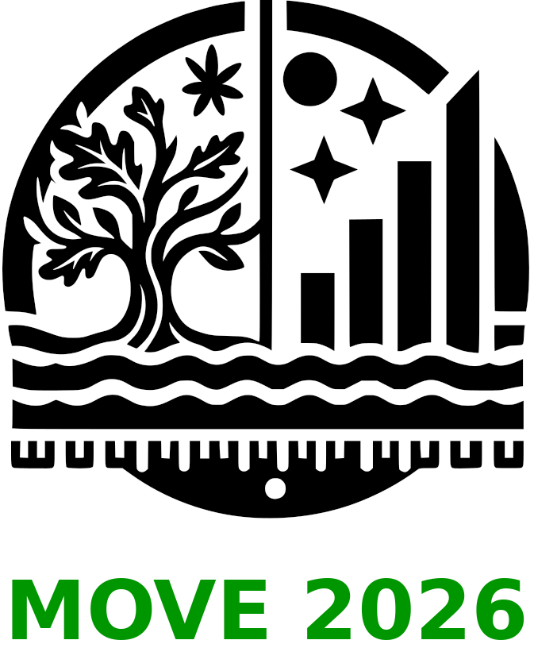

MOVE 2026
Measuring Ontologies for Value Enhancement Workshop
September 16–18, 2026 · University of Reading, UK (Hybrid)
Dear colleagues,
We are pleased to announce the Third International Measuring Ontologies for Value Enhancement Workshop (MOVE2026), which will be held as a hybrid event at Henley Business School, University of Reading, UK, from 16–18 September 2026.
There is no registration fee for this event.
We intend to publish post-proceedings in Springer’s Communications in Computer and Information Science (CCIS) series (subject to confirmation).

The second set of MOVE proceedings is currently in press in the same series.
MOVE2026 brings together researchers and practitioners working in ontologies, AI, enterprise architecture, knowledge representation, deep semantics, and socio-technical systems.
Important Dates
| Milestone | Date |
|---|---|
| Paper submission |
June 22, 2026 July 22, 2026 |
| Initial reviews completed | August 12, 2026 |
| Workshop paper version due | August 30, 2026 |
| Final feedback to authors | September 7, 2026 |
| Post-proceedings paper submission | December 31, 2026 |
Submission
Papers should not exceed 10 pages (excluding references). Please use Springer templates:
Springer Conference Author Guidelines
Submission is via EasyChair:
https://easychair.org/conferences/?conf=move2026
Further Information
Website:
https://sysaffairs.org/
Discord:
https://discord.gg/YYAUm3KM
Organisers:
Rubina Polovina — Systems Affairs, Toronto
Simon Polovina — Sheffield Hallam University, UK
David Jakobson — Aalborg University, Denmark
On behalf of the MOVE Programme Committee